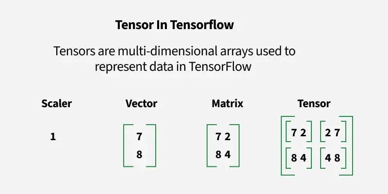

Tensor 자료구조
TensorFlow를 공부하고 있으나, 정작 Tensor에 대해 아는 것은 없는 것 같아
Tensor의 자료구조
를 처음부터 공부해보려고 합니다.
1. Tensor
텐서는 수학적인 개념으로 데이터의 배열이라고 볼 수 있다. 간단히 말하자면 다차원 배열을 통칭한다.
2. Rank

2-1. Scalar ( 0D Tensor )
Scalar는 축과 형상이 없이 하나의 숫자를 가지고 있는 텐서를 의미한다.
import numpy as np
x = np.array(1)
print(x)
print(x.ndim)
결과는 1, 0이 나온다.
즉 ndim을 통해 차원을 파악하면 0차원, 값은 단일 숫자인 1이 나오는 것이다.
2-2. Vector ( 1D Tensor )
Vector는 1차원 텐서로 스칼라 값을 나열한 리스트라 생각하면 편하다.
*보통 1D Tensor의 shape는 (N,)으로 표기되어지는데,
이는 행렬과 구분하기 위해 (N,1)이 아닌 (N,)으로 표기하는 것이다.
import numpy as np
x = np.array([1,2,3,4,5])
print(x)
print(x.ndim)
결과는 [1 2 3 4 5] , 1이 나온다. 즉 Vector는 1차원 데이터이며, Scalar인 값 1,2,3,4,5가 담긴 리스트이다.
2-3. Matrix ( 2D Tensor )
Matrix는 2차원 텐서로 Vector와 비슷하게,
이전 차원인 값인 Vector를 나열한 리스트라 생각하면 편하다.
import numpy as np
x = np.array([[1,2,3,4,5], [6,7,8,9,10]])
print(x)
print(x.ndim)
결과는 [[1 2 3 4 5] [6 7 8 9 10]] , 2이 나온다. 즉 Matrix는 2차원 데이터이며, Vector인 값 [1 2 3 4 5]와 [6 7 8 9 10]가 담긴 리스트이다.
2-4. Tensor ( 3D Tensor )
Tensor 역시 이전 차원의 Matrix를 나열한 리스트이다.
import numpy as np
# 대괄호가 3개([[[)로 시작하며, Vector가 쌓여있는 형태이다.
x = np.array([
[[1, 2, 3, 4, 5], [6, 7, 8, 9, 10]],
[[11, 12, 13, 14, 15], [16, 17, 18, 19, 20]]
])
print(x)
print(x.ndim)
출력 결과로 [[[ 1 2 3 4 5][ 6 7 8 9 10]] [[11 12 13 14 15][16 17 18 19 20]]]
차원이 3으로 나오는 것을 확인할 수 있습니다.
2-4. *Note

우선 0차원 텐서인 Scalar는 축이 없는 0차원 데이터이고
1차원 텐서인 Vector는 1개의 선을 가지고 있으며, 크기와 더불어 방향을 가진다.
2차원 텐서인 Matrix는 행과 열이라는 두개의 축이 존재한다.
앞서 설명에서 Vector를 나열한 리스트라 생각하면 편하다 하였는데, 이는 곧 선이 모여 면이 된 구조이다.
3차원 이후에는 #D Tensor로 표기하면 되며, 3D Tensor는행과 열에 더해 깊이를 가진다.
이는 면이 모여 입방체가 된 구조이다.
3. Shape
RANK가 축의 개수라면 Shape는 각 축의 길이이다.
RANK는 데이터가 선인지 면인지 입방체인지 알려주는 반면
그 선이 얼마나 긴지 면은 얼마나 넓은지 입방체가 얼마나 큰지 알려준다.
import numpy as np
x = np.array([
[[1, 2, 3, 4, 5], [6, 7, 8, 9, 10]],
[[11, 12, 13, 14, 15], [16, 17, 18, 19, 20]]
])
print(x.shape)
출력 결과는 (2, 2, 5)이며 각각의 의미는 다음과 같다
첫번째 2 (깊이) : 입방체의 면에 2개의 행렬이 있다.
두번째 2 (행) : 각 행렬에 가로행이 2개씩 있다.
세번째 5 (열) : 각 행렬의 가로행에 원소가 5개씩 있다.
4. Tensorflow에서 Tensor의 선언 및 활용
4-1. tf.constant
한번 선언하면
4-2. tf.Variable
값을 자유롭게 바꿀 수 있는 텐서이다.
4-3. tf.placeholder
TensorFlow 1.X버전의 핵심 이었으나, 현재는 사용하지 않는다.
선언시 값을 바로 주는 것이 아니라, 데이터를 나중에 받기 위해 비워두는 공간이다.
4-4. 선언
선언 방식은 모두 비슷하거나 동일하다.
TensorFlow 1.X
import tensorflow as tf
x = tf.Variable([[0.1, 0.2, 0.3], [0.4, 0.5, 0.6]], name='weight')
sess = tf.Session()
sess.run(tf.global_variables_initializer())
print(sess.run(x))
Tensorflow 1.X 버전에서는 선언 시점과 초기화 시점이 다르다.
tf.Variable()를 통해 정의를 해도 global_variables_initializer 시점에서 정의하며
sess.run(init)에서 실제 메모리에 할당이 되고 초기화된다.
TensorFlow 2.X
import tensorflow as tf
x = tf.Variable([[0.1, 0.2, 0.3], [0.4, 0.5, 0.6]], name='weight')
print(x)
Tensorflow 2.X버전 이후부터는 선언 즉시 값이 정의된다.
5. 유의사항
5-1. 데이터 타입과 명사
하나의 텐서 안에는 반드시 같은 데이터 타입을 사용한다.
만약 정수와 실수를 같이 넣는다면, 임의로 타입을 변환하여 에러가 날 수 있다.
5-2. 구조 유지
2차원 텐서 이상을 선언 할 때, 안쪽에 있는 리스트 들의 길이가 들쭉날쭉하면 안된다.
행마다 열의 개수가 다르다면 행렬 연산이 되지 않기 때문이다.
Tensor의 Rank, Shape, 선언에 대해 알아보았다.